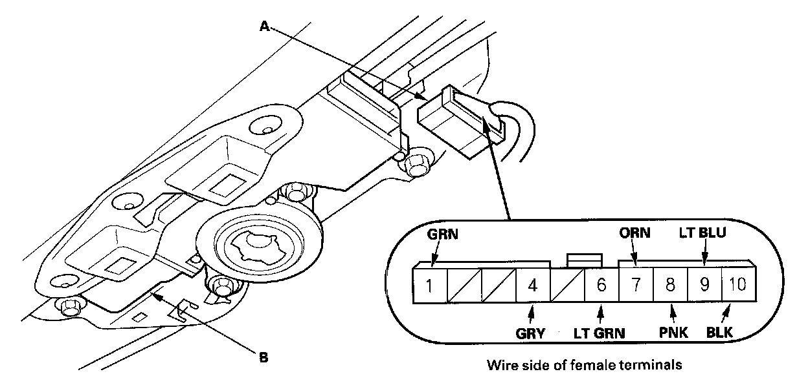

Moonroof Control Unit Input Test
Moonroof Control Unit Input TestBefore troubleshooting the moonroof circuit, troubleshoot the multiplex integrated control system using B-CAN System Diagnosis Test Mode A.
If the moonroof works OK manually, but will not work in AUTO, or reverses frequently (pinch detection) do the moonroof calibration before proceeding with the input test.
1. Turn the ignition switch OFF.
2. Remove the headliner.

3. Disconnect the 10P connector (A) from the moonroof control unit(B).
4. Inspect the connector and socket terminals to be sure they are all making good contact.
- If the terminals are bent, loose or corroded, repair them as necessary, and recheck the system.
- If the terminals look OK, go to step 5.
5. With the connector still disconnected, make these input tests at the connector.
- If any test indicates a problem, find and correct the cause, then recheck the system.
- If all the input tests prove OK, go to step 6.
6. Reconnect the connector, and make these input tests at the connector.
- If any test indicates a problem, find and correct the cause, then recheck the system.
- If all the input tests prove OK, go to step 7.
7. If all the input tests are OK and multiple failures are found, replace the moonroof control unit/motor assembly. If the problem is related to the key-off operation, go to the driver's MPCS unit input test Driver's MPCS Unit Input Test, and passenger's MPCS unit input test Passenger's MPCS Unit Input Test.